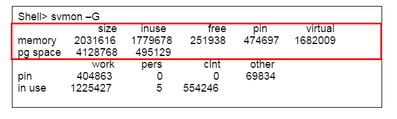
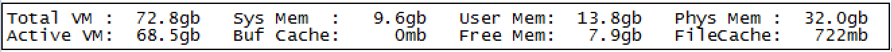
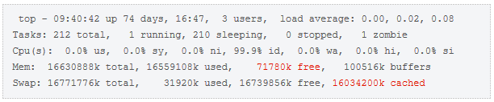
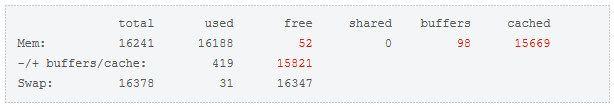

Service delay may occur due to sudden memory shortage during the service operation. In this process, when memory shortage occurs continuously, this chapter describes how to check and resolve this matter.
How to check system memory/swap by OS
The available memory can be checked by using the OS command to see if the free memory of the device is insufficient.
The memory usage can be checked with the following OS command.
a. AIX

| Red Box | Description |
|---|---|
| size | The number of pages in the total physical memory. Actual 1 page is 4,096 bytes, so it is a system with 7936M of memory |
| inuse | The number of physical memory pages in use (Computational + Persistent) |
| free | The number of pages not in use in physical memory |
| pin | The number of pages of physical memory that cannot be swapped out |
| virtual | The number of pages created by VMM (Virtual Memory Manager) |
| pg space | The usage of paging space |
b. HPUX
# glance -> check m memory

Current physical memory 32.0GB-System 9.6GB + User 13.8GB + File cache 722MB-Buffer cache 0GB + Free 7.9GB (Amount of available memory)
c. LINUX: In Linux, the memory usage status can be inquired with the top command. Below is a sample of the top result, and the values of free and cached are the main items among the various items in the example.

In Linux, the available memory calculation can be done with: free + buffers + cached
To analyze the memory capacity with the result of the top command above,
-Total physical memory: 16630888k-Actually used memory (used-cached-buffers): 16559108k-16034200k-100516k = 424392k-Actually available memory (free + buffers + cached) : 71780k + 100516k + 16034200k = 16206496k-Total memory ( Actual memory in use + actual available memory): 424392k + 16206496k = 16630888k
The following is the result of the inquiry with the free command. (The -m option specifies the output in MB)

Routine Checklist
The user needs the following history management to determine whether the current memory usage is normal or not. This can be used as important information to track the cause by analyzing the increased part compared to the normal when a problem occurs.
| Collection Plan | |
|---|---|
| Utilization of Hourly/daily memory | Record/Manage periodically with the method of acquiring the memory utilization rate of the Altibase process provided by the OS. |
| Transaction throughput by time/day | Record/manage the transaction throughput of the application program. If this is difficult, the following information is periodically acquired and recorded/managed with V$SYSSTAT provided by ALTIBASE. select * from v$memstat order by alloc_size desc; |
| Increase or decrease in the service thread | There are cases where the number of service threads increases due to an increase in sessions or an increase in workload than usual, Check whether this pattern occurs. SELECT COUNT(*) AS THREAD FROM V$SERVICE_THREAD; SELECT COUNT(*) AS SESSION FROM V$SESSION; |
It may be more convenient to record information collected at regular intervals in a file using the following shell script.
Since EXECUTE COUNT obtained by V$sysstat is an accumulated value, to obtain the increase per unit time, the unit time increase value = (last value-previous value) must be calculated.
# gettps.sh
ALTIPID=`ps -ef | grep $USER | grep "bin/altibase -p boot" | grep -v grep | awk '{print $2}'`
MAXCOUNT=3
COUNT=0
INTERVAL=30
do_getExecuteCount()
{
is -silent <<EOF
set linesize 1024;
set colsize 50;
set feedback off;
set heading off;
select 'RESULT='||( select count(*) from v\$session )
||'=' || ( select count(*) from v\$service_thread )
||'=' || ( select sum(value) from v\$sysstat where name in ( 'execute success count','prepare success count','prepare failure count') )
from dual;
EOF
}
while [ $COUNT -lt $MAXCOUNT ]
do
ALTICPU=`ps -o pcpu -p $ALTIPID | grep -v CPU`
ALTIMEM=`ps -o pmem -p $ALTIPID | grep -v MEM`
EXECRESULT=`do_getExecuteCount`
SESSIONCNT=`echo $EXECRESULT | grep "RESULT=" | cut -d'=' -f 2| tr -d ' '`
THREADCNT=`echo $EXECRESULT | grep "RESULT=" | cut -d'=' -f 3 | tr -d ' '`
EXECCNT=`echo $EXECRESULT | grep "RESULT=" | cut -d'=' -f 4 | tr -d ' '`
echo `date "+%Y%m%d %H%M%S: CPU USAGE="`$ALTICPU" " MEM USAGE=$ALTIMEM" SESSIONCNT=$SESSIONCNT THREADCNT=$THREADCNT EXECCNT=$EXECCNT"
sleep $INTERVAL
COUNT=`expr $COUNT + 1`
done
When the above shell script is executed, the following output can be displayed.
$ sh get.sh 20170213 110718: CPU USAGE= 7.1 MEM USAGE= 0.6 SESSIONCNT=1 THREADCNT=25 EXECCNT=1201 20170213 110748: CPU USAGE= 7.1 MEM USAGE= 0.6 SESSIONCNT=1 THREADCNT=25 EXECCNT=1202 20170213 110818: CPU USAGE= 7.1 MEM USAGE= 0.6 SESSIONCNT=1 THREADCNT=25 EXECCNT=1203 ......
V$MEMSTAT
V$MEMSTAT is a performance view of memory usage for each internal module provided by Altibase.
If the memory occupied by the Altibase process is large, the user can check Altibase's memory usage in detail with V$MEMSTAT.
| Query_Prepare | When executing SQL, memory for internally managing information such as SQL statement analysis,s statistics information, execution plan, and binding is required during the prepare process. Generally, if SQL is executed in a Prepare and Execute structure every time in an application (Direct Execute Method), the memory usage of this item may increase. If SQL is executed in the Prepare Execute method (Prepare 1 + Execute N), the memory usage of this item increases to some extent and then maintains a certain size during the operation. This value is the total size of Query_Prpare used in all sessions. |
| Query_Execute | This is the memory size used to store data sort and intermediate result values during the SQL execution. This can be increased when executing SQL with the memory table or the TEMP_TBS_MEMORY hint. This value is the total size of Query_Execute used in all sessions. Memory is released at the end of AltibaseSQL execution. Therefore, in a normal case, it increases to some extent and then decreases and maintains a certain size during the operation. |
| Query_Binding | This is the memory size for storing binding variables during the SQL execution. This value is affected by the binding variables used in one SQL. When the PrepareStatement is closed or the session is terminated, memory is returned, so it increases and decreases to some extent in normal cases, and maintains a certain size during the operation. Generally, ane examples of increasing Query_Bing are as follows: 1) When there is a rapid increase in statements |
| Storage_Memory_Manager | This is a space to store information for memory tablespace management and data in memory tables, and is the size of memory data residing in memory for Altibase's high performance data processing. When memory data accumulates and grows, the value of this item increases. |
| Index_Memory | This shows the memory usage for the index created in the memory table. Increasing this value means that the memory index usage has increased. Memory can be clean up by removing indexes that take a lot of memory |
| Storage_Disk_Buffer | This is the memory used by the disk buffer manager. It is a space for processing data by buffering the data in the disk tablespaces in memory. IF this space is insufficient, in/out of disk pages occurs frequently, which can degrade performance. |
Internal Module | Description |
|---|
Typical types of memory increase
The memory increase of Altibase can be organized as follows based on the "Routine Checklist" described above.
- When data in the memory table is increased
- When the number of executing SQL statements increases
- When it is increased by the MVCC (Multi-Version Concurrency Control) technique
- When the deletion of aging target information is delayed
Let's take a closer look at the causes and measures for these cases in the next chapter.
{kind=link}
{kind=link}
{kind=link}
{kind=link}